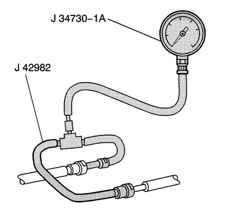

Montaje y Desmontaje del Manómetro de Combustible
Herramientas especiales
EN-49495 Comprobador de la presión de combustible
Si desea informarse sobre herramientas regionales equivalentes, consultar Herramientas especiales .
Procedimiento de montaje
Advertencia: La gasolina o los vapores de gasolina son muy inflamables. Puede producirse un incendio si existe una fuente de chispa. Nunca vacíe o almacene gasolina o combustible diesel en un recipiente abierto debido al riesgo de explosión o incendio. Disponga de un extintor de incendios químico seco (clase B) en las proximidades.
Advertencia: Envuelva con una toallita alrededor de la conexión de presión de combustible para reducir el riesgo de incendio y de lesiones personales. La toallita absorberá las fugas de combustible que se producen al conectar el indicador de presión de combustible. Ponga la toallita en un contenedor aprobado una vez completada la conexión del indicador de presión de combustible.
Precaución: Limpie las siguientes zonas antes de desconectar nada para que evitar que entre suciedad en el sistema:| • | Las conexiones de los tubos de combustible |
| • | Las conexiones de tubos flexibles |
| • | Las zonas alrededor de las conexiones |
- Desconecte el enganche de conexión rápida de la manguera de alimentación de combustible del conducto de alimentación de combustible del distribuidor de combustible. Utilice un trapo de taller para recoger cualquier resto de combustible que pudiera escapar.
- Monte el J 42982 entre el conducto de alimentación de combustible del distribuidor de combustible y de la manguera de alimentación.
Precaución:Consulte Precaución con las fijaciones en la sección Prólogo.

- Monte el J 34730-1A al J 42982, y apriete bien.
- Conecte el encendido para presurizar el sistema de combustible.
- Apague el encendido.
- Compruebe la existencia de fugas de combustible.
Procedimiento de desmontaje
- Desmonte el J 34730-1A del J 42982.
- Utilizando el CH-47831, desconecte el enganche de conexión rápida del J 42982 del conducto de alimentación del distribuidor de combustible. Utilice un trapo de taller para recoger cualquier resto de combustible que pudiera escapar.
- Desconecte el enganche de conexión rápida de la manguera de alimentación de combustible (3) del J 42982 y desmonte el adaptador. Utilice un trapo de taller para recoger cualquier resto de combustible que pudiera escapar.
- Conecte el adaptador de conexión rápida de la manguera de alimentación de combustible (3) al conducto de alimentación de combustible del distribuidor de combustible.
- Conecte el encendido para presurizar el sistema de combustible.
- Apague el encendido.
- Compruebe la existencia de fugas de combustible.
| © Copyright Chevrolet. All rights reserved |